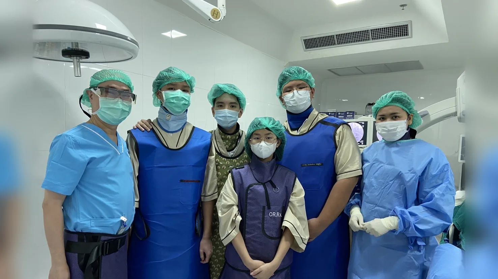

Medical Exploration
About Medical Exploration
MedLink started with students who wanted to understand medicine before choosing it. Medical Exploration puts members inside hospitals and medical conferences, so they see the real work of doctors and healthcare teams.
10 photos
Hospital Shadowing Program
Members observe doctors and other healthcare professionals at work in hospitals in and around Bangkok. The program runs every year.
36 photos
Spine Surgery Conferences
MedLink members help run two spine surgery meetings: the ASEAN MISST congress, which brings together spine surgeons from across Southeast Asia, and ThaiMISST, its Thai counterpart.
We guide delegates from the tour buses at the opening ceremony, handle registration and certificate printing, run camera and lighting, and help with logistics. Members have also performed music on stage to raise funds, and presented a paper at ThaiMISST.
- ASEAN MISST 2025
- ThaiMISST 2025 and 2026
- Paper: The Novel Expandable Cannular for Uniportal Endo-LIF
10th ASEAN MISST · February 2025
ThaiMISST · 2025 and 2026
12 photos
Skills Training with Doctors
Doctors also teach MedLink members hands-on skills. Before the February 2026 trip, doctors from Rajavithi Hospital taught members first aid and CPR, so members could pass the skills on to students in Mae Chaem.
On the trip, members practiced suturing with the volunteer doctors.
- Since 2026
- First aid, CPR, and suturing